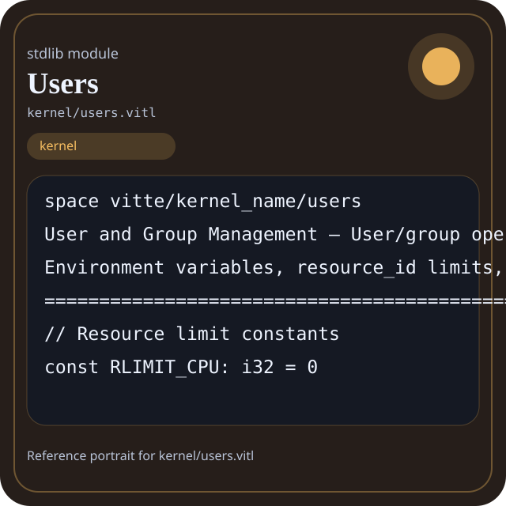

Stdlib module kernel/users.vitl
This page is a wiki-style reference for one concrete stdlib file. It explains what the file owns, where it fits in the family, and how to decide whether this is the right surface to depend on.

kernel/users.vitl.Family: kernel
Kind: public stdlib surface
Page style: this reference follows the same “encyclopedic card + portrait + usage contract” logic as the keyword pages, but for stdlib modules.
Summary
- Overview
- Purpose
- Taxonomy
- Implementation profile
- Top-level API inventory
- Position in family
- Declaration map
- Representative signatures
- How to use this module
- User example
- Keyword coverage
- Source shape
- Source landmarks
- Source organization
- Complete API catalog
- Integration boundaries
- Composition guidance
- Relationship table
- Neighbor modules
Overview
| Field | Value |
|---|---|
| Path | kernel/users.vitl |
| Family | kernel |
| Kind | public stdlib surface |
| Line count | 330 |
| Declared procedures | 46 |
| Declared forms/picks | 3 |
`kernel/users.vitl` is a public stdlib surface inside the `kernel` family. It should be read as one focused slice of the broader family responsibility: System-facing runtime helpers such as process, scheduler, threads, sync, users, signals, network, device, and memory.
Purpose
This file should be chosen because of responsibility, not because its name “sounds close enough”. Inside the kernel family, it carries one focused part of the contract and keeps that responsibility separate from neighboring concerns.
- A service manager may use scheduler, process, and signals while keeping policy in separate code.
- A network-facing runtime should explain why it depends on kernel surfaces instead of lighter families.
Taxonomy
Think of this page as a generated encyclopedia entry rather than a hand-written tutorial. The goal is to show what kind of module this is, how dense it is, and what reading strategy makes sense before depending on it.
- Large algorithm surface: this file exposes many procedures and likely acts as a domain toolkit rather than a single thin wrapper.
- Owns domain vocabulary: the module declares data shapes in addition to executable helpers, so its types are part of the contract.
- Has tuning constants: part of the module behavior is controlled by named constants that document default precision, limits, or policy.
- Minimal top-level dependencies: the module reads as mostly self-contained from its opening declarations.
- Explicit export surface: the file ends with visible export declarations instead of relying only on implicit namespace discovery.
Implementation profile
This profile is inferred directly from the source text. It does not replace reading the file, but it tells you quickly whether the module is mostly declarative, loop-heavy, branch-heavy, or organized around many small exits.
| Signal | Count | What it suggests |
|---|---|---|
if | 1 | Branching density and local decision-making. |
while | 0 | Loop-heavy or iterative implementation style. |
for | 0 | Collection-style traversal at source level. |
match | 0 | Variant-driven branching or grammar-style decoding. |
let | 0 | Local state and intermediate value density. |
give | 46 | Number of explicit exit points and result shaping. |
Top-level API inventory
| Surface | Items |
|---|---|
| Procedures | getuid, geteuid, setuid, seteuid, getgid, getegid, setgid, setegid, getgroups, setgroups, getpid, getppid |
| Forms | PasswdEntry, GroupEntry, RlimitEntry |
| Picks | none declared at top level |
| Constants | RLIMIT_CPU, RLIMIT_FSIZE, RLIMIT_DATA, RLIMIT_STACK, RLIMIT_CORE, RLIMIT_RSS, RLIMIT_NPROC, RLIMIT_NOFILE, RLIMIT_MEMLOCK, RLIMIT_AS, RLIM_INFINITY |
| Exports | * |
Imported surfaces
This file does not advertise a top-level `use` surface in its opening declarations. That often means it is either self-contained or an aggregation layer.
Position in family
This file is module 12 of 12 in the kernel family when ordered by path. By procedure count it ranks 1, and by line count it ranks 2. Those ranks are useful as rough signals of breadth, not as quality judgments.
Declaration map
The declaration map turns raw source into a scan-friendly catalog. It is useful when the file is large enough that a reader wants to orient by kinds of surfaces first.
| Line | Name | Kind | Role |
|---|---|---|---|
| 1 | vitte/kernel_name/users | space | Declares the namespace that anchors this file in the stdlib tree. |
| 9 | RLIMIT_CPU | const | Defines a named constant reused across the module. |
| 10 | RLIMIT_FSIZE | const | Defines a named constant reused across the module. |
| 11 | RLIMIT_DATA | const | Defines a named constant reused across the module. |
| 12 | RLIMIT_STACK | const | Defines a named constant reused across the module. |
| 13 | RLIMIT_CORE | const | Defines a named constant reused across the module. |
| 14 | RLIMIT_RSS | const | Defines a named constant reused across the module. |
| 15 | RLIMIT_NPROC | const | Defines a named constant reused across the module. |
| 16 | RLIMIT_NOFILE | const | Defines a named constant reused across the module. |
| 17 | RLIMIT_MEMLOCK | const | Defines a named constant reused across the module. |
| 18 | RLIMIT_AS | const | Defines a named constant reused across the module. |
| 20 | RLIM_INFINITY | const | Defines a named constant reused across the module. |
| 23 | PasswdEntry | form | Introduces a structured data shape that other procedures can exchange. |
| 32 | GroupEntry | form | Introduces a structured data shape that other procedures can exchange. |
| 39 | RlimitEntry | form | Introduces a structured data shape that other procedures can exchange. |
| 48 | getuid | proc | Represents one top-level surface in the file contract and should be read as part of the module boundary. |
| 53 | geteuid | proc | Represents one top-level surface in the file contract and should be read as part of the module boundary. |
| 58 | setuid | proc | Represents one top-level surface in the file contract and should be read as part of the module boundary. |
| 63 | seteuid | proc | Represents one top-level surface in the file contract and should be read as part of the module boundary. |
| 68 | getgid | proc | Represents one top-level surface in the file contract and should be read as part of the module boundary. |
| 73 | getegid | proc | Represents one top-level surface in the file contract and should be read as part of the module boundary. |
| 78 | setgid | proc | Represents one top-level surface in the file contract and should be read as part of the module boundary. |
| 83 | setegid | proc | Represents one top-level surface in the file contract and should be read as part of the module boundary. |
| 88 | getgroups | proc | Represents one top-level surface in the file contract and should be read as part of the module boundary. |
| 93 | setgroups | proc | Represents one top-level surface in the file contract and should be read as part of the module boundary. |
| 102 | getpid | proc | Represents one top-level surface in the file contract and should be read as part of the module boundary. |
| 107 | getppid | proc | Represents one top-level surface in the file contract and should be read as part of the module boundary. |
| 112 | getpgid | proc | Represents one top-level surface in the file contract and should be read as part of the module boundary. |
| 117 | setpgid | proc | Represents one top-level surface in the file contract and should be read as part of the module boundary. |
| 122 | getpgrp | proc | Represents one top-level surface in the file contract and should be read as part of the module boundary. |
| 127 | setsid | proc | Represents one top-level surface in the file contract and should be read as part of the module boundary. |
| 132 | getsid | proc | Represents one top-level surface in the file contract and should be read as part of the module boundary. |
| 141 | getpwuid | proc | Represents one top-level surface in the file contract and should be read as part of the module boundary. |
| 153 | getpwnam | proc | Represents one top-level surface in the file contract and should be read as part of the module boundary. |
| 165 | getgrgid | proc | Represents one top-level surface in the file contract and should be read as part of the module boundary. |
| 174 | getgrnam | proc | Represents one top-level surface in the file contract and should be read as part of the module boundary. |
| 187 | getrlimit | proc | Represents one top-level surface in the file contract and should be read as part of the module boundary. |
| 195 | setrlimit | proc | Represents one top-level surface in the file contract and should be read as part of the module boundary. |
| 200 | getrlimit_cpu | proc | Represents one top-level surface in the file contract and should be read as part of the module boundary. |
| 205 | setrlimit_cpu | proc | Represents one top-level surface in the file contract and should be read as part of the module boundary. |
| 210 | getrlimit_fsize | proc | Represents one top-level surface in the file contract and should be read as part of the module boundary. |
| 215 | setrlimit_fsize | proc | Represents one top-level surface in the file contract and should be read as part of the module boundary. |
| 220 | getrlimit_nofile | proc | Represents one top-level surface in the file contract and should be read as part of the module boundary. |
| 225 | setrlimit_nofile | proc | Represents one top-level surface in the file contract and should be read as part of the module boundary. |
| 234 | getenv | proc | Represents one top-level surface in the file contract and should be read as part of the module boundary. |
| 239 | setenv | proc | Represents one top-level surface in the file contract and should be read as part of the module boundary. |
| 244 | unsetenv | proc | Represents one top-level surface in the file contract and should be read as part of the module boundary. |
| 249 | environ | proc | Represents one top-level surface in the file contract and should be read as part of the module boundary. |
| 254 | clearenv | proc | Represents one top-level surface in the file contract and should be read as part of the module boundary. |
| 263 | getpriority | proc | Represents one top-level surface in the file contract and should be read as part of the module boundary. |
| 268 | setpriority | proc | Represents one top-level surface in the file contract and should be read as part of the module boundary. |
| 273 | getrusage | proc | Represents one top-level surface in the file contract and should be read as part of the module boundary. |
| 282 | get_login | proc | Represents one top-level surface in the file contract and should be read as part of the module boundary. |
| 287 | get_username | proc | Represents one top-level surface in the file contract and should be read as part of the module boundary. |
| 292 | get_home_dir | proc | Represents one top-level surface in the file contract and should be read as part of the module boundary. |
| 297 | get_shell | proc | Represents one top-level surface in the file contract and should be read as part of the module boundary. |
| 302 | is_root | proc | Represents one top-level surface in the file contract and should be read as part of the module boundary. |
| 311 | access | proc | Represents one top-level surface in the file contract and should be read as part of the module boundary. |
| 316 | faccessat | proc | Represents one top-level surface in the file contract and should be read as part of the module boundary. |
| 321 | eaccess | proc | Represents one top-level surface in the file contract and should be read as part of the module boundary. |
| 326 | initgroups | proc | Represents one top-level surface in the file contract and should be read as part of the module boundary. |
The table is exhaustive for top-level declarations of the selected kinds. This file declares 61 matching surfaces.
Representative signatures
These signatures are shown in source order so the page keeps the feel of a reference manual, not just a keyword cloud.
const RLIMIT_CPU: i32 = 0(line 9)const RLIMIT_FSIZE: i32 = 1(line 10)const RLIMIT_DATA: i32 = 2(line 11)const RLIMIT_STACK: i32 = 3(line 12)const RLIMIT_CORE: i32 = 4(line 13)const RLIMIT_RSS: i32 = 5(line 14)const RLIMIT_NPROC: i32 = 6(line 15)const RLIMIT_NOFILE: i32 = 7(line 16)const RLIMIT_MEMLOCK: i32 = 8(line 17)const RLIMIT_AS: i32 = 9(line 18)const RLIM_INFINITY: i64 = 9223372036854775807(line 20)form PasswdEntry {(line 23)form GroupEntry {(line 32)form RlimitEntry {(line 39)proc getuid() -> i32 {(line 48)proc geteuid() -> i32 {(line 53)proc setuid(uid: i32) -> int {(line 58)proc seteuid(uid: i32) -> int {(line 63)
The list is intentionally capped here; the source file declares 60 matching signatures in total.
How to use this module
Start by reading the file as an ownership boundary. Ask three questions: what enters this module, what stable types or procedures it exports, and what adjacent module should stay outside of it.
- Read
spaceand top-level imports first so the ownership boundary ofkernel/users.vitlis explicit. - Scan constants before procedures; they often encode precision, limits, or policy assumptions that explain later behavior.
- Read declared forms and picks before algorithms so the data vocabulary is stable in your head.
- Traverse procedures in source order; the early helpers usually explain the naming and numeric conventions used later.
- Use the source landmarks section below as a table of contents when the file is large.
User example
This example is generated from the actual stdlib module surface. Its job is not to be the smallest snippet possible; its job is to show a realistic consumer-shaped file that exercises the module and mirrors the language keywords the module itself relies on.
space demo/kernel_users
const SAMPLE_LABEL: string = "demo"
form UserReport {
label: string,
ready: bool
}
proc run_example() -> UserReport {
let stable: bool = ready and true
if ready {
give UserReport { label: "not-ready", ready: false }
}
give UserReport { label: "ok", ready: ready }
let copies: f64 = 1 as f64
}
export run_exampleKeyword coverage
This table makes the “all keywords of the module” requirement auditable. It compares the detected Vitte keywords in the source file with the generated consumer example above.
| Keyword | Present in module source | Used in generated user example |
|---|---|---|
space | yes | yes |
const | yes | yes |
form | yes | yes |
proc | yes | yes |
if | yes | yes |
give | yes | yes |
export | yes | yes |
and | yes | yes |
as | yes | yes |
The generated snippet exercises every detected Vitte keyword used by this module.
Source shape
space vitte/kernel_name/users
// Resource limit constants
const RLIMIT_CPU: i32 = 0
const RLIMIT_FSIZE: i32 = 1
const RLIMIT_DATA: i32 = 2
const RLIMIT_STACK: i32 = 3
const RLIMIT_CORE: i32 = 4
const RLIMIT_RSS: i32 = 5
const RLIMIT_NPROC: i32 = 6
const RLIMIT_NOFILE: i32 = 7The excerpt is not meant to replace the file. It exists to make the module recognizable at first glance, the same way a Wikipedia infobox helps the reader orient before reading the whole article.
Source landmarks
Large files are easier to retain when they have visible landmarks. When the source contains explicit section banners, they are surfaced here; otherwise the first major declarations are used as anchors.
- User and Group Management — User/group operations, / Environment variables, resource_id limits, permissions
- User ID Operations
- Process ID Operations
- Password and Group Database
- Resource Limits
- Environment Variables
- Process Priority and Scheduling
- User Information Functions
- Access Control
Source organization
When a file carries its own internal chaptering, those chapters usually reveal the intended reading order better than a flat symbol list. This section reconstructs that organization from the source itself.
Opening declarations
Top-level items: 1. Procedures: 0. Data surfaces: 0. Constants: 0.
First visible names: vitte/kernel_name/users
User and Group Management — User/group operations, / Environment variables, resource_id limits, permissions
Top-level items: 14. Procedures: 0. Data surfaces: 3. Constants: 11.
First visible names: RLIMIT_CPU, RLIMIT_FSIZE, RLIMIT_DATA, RLIMIT_STACK, RLIMIT_CORE, RLIMIT_RSS, RLIMIT_NPROC, RLIMIT_NOFILE, RLIMIT_MEMLOCK, RLIMIT_AS
User ID Operations
Top-level items: 10. Procedures: 10. Data surfaces: 0. Constants: 0.
First visible names: getuid, geteuid, setuid, seteuid, getgid, getegid, setgid, setegid, getgroups, setgroups
Process ID Operations
Top-level items: 7. Procedures: 7. Data surfaces: 0. Constants: 0.
First visible names: getpid, getppid, getpgid, setpgid, getpgrp, setsid, getsid
Password and Group Database
Top-level items: 4. Procedures: 4. Data surfaces: 0. Constants: 0.
First visible names: getpwuid, getpwnam, getgrgid, getgrnam
Resource Limits
Top-level items: 8. Procedures: 8. Data surfaces: 0. Constants: 0.
First visible names: getrlimit, setrlimit, getrlimit_cpu, setrlimit_cpu, getrlimit_fsize, setrlimit_fsize, getrlimit_nofile, setrlimit_nofile
Environment Variables
Top-level items: 5. Procedures: 5. Data surfaces: 0. Constants: 0.
First visible names: getenv, setenv, unsetenv, environ, clearenv
Process Priority and Scheduling
Top-level items: 3. Procedures: 3. Data surfaces: 0. Constants: 0.
First visible names: getpriority, setpriority, getrusage
User Information Functions
Top-level items: 5. Procedures: 5. Data surfaces: 0. Constants: 0.
First visible names: get_login, get_username, get_home_dir, get_shell, is_root
Access Control
Top-level items: 5. Procedures: 4. Data surfaces: 0. Constants: 0.
First visible names: access, faccessat, eaccess, initgroups, *
Complete API catalog
This catalog is the exhaustive file-level index for the module. It is intentionally closer to a generated encyclopedia appendix than to a tutorial summary.
Constants
| Line | Name | Signature | Role |
|---|---|---|---|
| 9 | RLIMIT_CPU | const RLIMIT_CPU: i32 = 0 | Defines a named constant reused across the module. |
| 10 | RLIMIT_FSIZE | const RLIMIT_FSIZE: i32 = 1 | Defines a named constant reused across the module. |
| 11 | RLIMIT_DATA | const RLIMIT_DATA: i32 = 2 | Defines a named constant reused across the module. |
| 12 | RLIMIT_STACK | const RLIMIT_STACK: i32 = 3 | Defines a named constant reused across the module. |
| 13 | RLIMIT_CORE | const RLIMIT_CORE: i32 = 4 | Defines a named constant reused across the module. |
| 14 | RLIMIT_RSS | const RLIMIT_RSS: i32 = 5 | Defines a named constant reused across the module. |
| 15 | RLIMIT_NPROC | const RLIMIT_NPROC: i32 = 6 | Defines a named constant reused across the module. |
| 16 | RLIMIT_NOFILE | const RLIMIT_NOFILE: i32 = 7 | Defines a named constant reused across the module. |
| 17 | RLIMIT_MEMLOCK | const RLIMIT_MEMLOCK: i32 = 8 | Defines a named constant reused across the module. |
| 18 | RLIMIT_AS | const RLIMIT_AS: i32 = 9 | Defines a named constant reused across the module. |
| 20 | RLIM_INFINITY | const RLIM_INFINITY: i64 = 9223372036854775807 | Defines a named constant reused across the module. |
Data surfaces
| Line | Name | Signature | Role |
|---|---|---|---|
| 23 | PasswdEntry | form PasswdEntry { | Introduces a structured data shape that other procedures can exchange. |
| 32 | GroupEntry | form GroupEntry { | Introduces a structured data shape that other procedures can exchange. |
| 39 | RlimitEntry | form RlimitEntry { | Introduces a structured data shape that other procedures can exchange. |
Procedures
| Line | Name | Signature | Role |
|---|---|---|---|
| 48 | getuid | proc getuid() -> i32 { | Represents one top-level surface in the file contract and should be read as part of the module boundary. |
| 53 | geteuid | proc geteuid() -> i32 { | Represents one top-level surface in the file contract and should be read as part of the module boundary. |
| 58 | setuid | proc setuid(uid: i32) -> int { | Represents one top-level surface in the file contract and should be read as part of the module boundary. |
| 63 | seteuid | proc seteuid(uid: i32) -> int { | Represents one top-level surface in the file contract and should be read as part of the module boundary. |
| 68 | getgid | proc getgid() -> i32 { | Represents one top-level surface in the file contract and should be read as part of the module boundary. |
| 73 | getegid | proc getegid() -> i32 { | Represents one top-level surface in the file contract and should be read as part of the module boundary. |
| 78 | setgid | proc setgid(gid: i32) -> int { | Represents one top-level surface in the file contract and should be read as part of the module boundary. |
| 83 | setegid | proc setegid(gid: i32) -> int { | Represents one top-level surface in the file contract and should be read as part of the module boundary. |
| 88 | getgroups | proc getgroups() -> [i32] { | Represents one top-level surface in the file contract and should be read as part of the module boundary. |
| 93 | setgroups | proc setgroups(groups: [i32]) -> int { | Represents one top-level surface in the file contract and should be read as part of the module boundary. |
| 102 | getpid | proc getpid() -> i32 { | Represents one top-level surface in the file contract and should be read as part of the module boundary. |
| 107 | getppid | proc getppid() -> i32 { | Represents one top-level surface in the file contract and should be read as part of the module boundary. |
| 112 | getpgid | proc getpgid(pid: i32) -> i32 { | Represents one top-level surface in the file contract and should be read as part of the module boundary. |
| 117 | setpgid | proc setpgid(pid: i32, pgid: i32) -> int { | Represents one top-level surface in the file contract and should be read as part of the module boundary. |
| 122 | getpgrp | proc getpgrp() -> i32 { | Represents one top-level surface in the file contract and should be read as part of the module boundary. |
| 127 | setsid | proc setsid() -> i32 { | Represents one top-level surface in the file contract and should be read as part of the module boundary. |
| 132 | getsid | proc getsid(pid: i32) -> i32 { | Represents one top-level surface in the file contract and should be read as part of the module boundary. |
| 141 | getpwuid | proc getpwuid(uid: i32) -> PasswdEntry { | Represents one top-level surface in the file contract and should be read as part of the module boundary. |
| 153 | getpwnam | proc getpwnam(name: string) -> PasswdEntry { | Represents one top-level surface in the file contract and should be read as part of the module boundary. |
| 165 | getgrgid | proc getgrgid(gid: i32) -> GroupEntry { | Represents one top-level surface in the file contract and should be read as part of the module boundary. |
| 174 | getgrnam | proc getgrnam(name: string) -> GroupEntry { | Represents one top-level surface in the file contract and should be read as part of the module boundary. |
| 187 | getrlimit | proc getrlimit(resource_id: i32) -> RlimitEntry { | Represents one top-level surface in the file contract and should be read as part of the module boundary. |
| 195 | setrlimit | proc setrlimit(resource_id: i32, rlim: RlimitEntry) -> int { | Represents one top-level surface in the file contract and should be read as part of the module boundary. |
| 200 | getrlimit_cpu | proc getrlimit_cpu() -> RlimitEntry { | Represents one top-level surface in the file contract and should be read as part of the module boundary. |
| 205 | setrlimit_cpu | proc setrlimit_cpu(limit: RlimitEntry) -> int { | Represents one top-level surface in the file contract and should be read as part of the module boundary. |
| 210 | getrlimit_fsize | proc getrlimit_fsize() -> RlimitEntry { | Represents one top-level surface in the file contract and should be read as part of the module boundary. |
| 215 | setrlimit_fsize | proc setrlimit_fsize(limit: RlimitEntry) -> int { | Represents one top-level surface in the file contract and should be read as part of the module boundary. |
| 220 | getrlimit_nofile | proc getrlimit_nofile() -> RlimitEntry { | Represents one top-level surface in the file contract and should be read as part of the module boundary. |
| 225 | setrlimit_nofile | proc setrlimit_nofile(limit: RlimitEntry) -> int { | Represents one top-level surface in the file contract and should be read as part of the module boundary. |
| 234 | getenv | proc getenv(name: string) -> string { | Represents one top-level surface in the file contract and should be read as part of the module boundary. |
| 239 | setenv | proc setenv(name: string, value: string, overwrite: int) -> int { | Represents one top-level surface in the file contract and should be read as part of the module boundary. |
| 244 | unsetenv | proc unsetenv(name: string) -> int { | Represents one top-level surface in the file contract and should be read as part of the module boundary. |
| 249 | environ | proc environ() -> [string] { | Represents one top-level surface in the file contract and should be read as part of the module boundary. |
| 254 | clearenv | proc clearenv() -> int { | Represents one top-level surface in the file contract and should be read as part of the module boundary. |
| 263 | getpriority | proc getpriority(which: i32, who: i32) -> i32 { | Represents one top-level surface in the file contract and should be read as part of the module boundary. |
| 268 | setpriority | proc setpriority(which: i32, who: i32, prio: i32) -> int { | Represents one top-level surface in the file contract and should be read as part of the module boundary. |
| 273 | getrusage | proc getrusage(who: i32) -> [i64] { | Represents one top-level surface in the file contract and should be read as part of the module boundary. |
| 282 | get_login | proc get_login() -> string { | Represents one top-level surface in the file contract and should be read as part of the module boundary. |
| 287 | get_username | proc get_username() -> string { | Represents one top-level surface in the file contract and should be read as part of the module boundary. |
| 292 | get_home_dir | proc get_home_dir() -> string { | Represents one top-level surface in the file contract and should be read as part of the module boundary. |
| 297 | get_shell | proc get_shell() -> string { | Represents one top-level surface in the file contract and should be read as part of the module boundary. |
| 302 | is_root | proc is_root() -> int { | Represents one top-level surface in the file contract and should be read as part of the module boundary. |
| 311 | access | proc access(pathname: string, mode: i32) -> int { | Represents one top-level surface in the file contract and should be read as part of the module boundary. |
| 316 | faccessat | proc faccessat(dirfd: i32, pathname: string, mode: i32, flag_bits: i32) -> int { | Represents one top-level surface in the file contract and should be read as part of the module boundary. |
| 321 | eaccess | proc eaccess(pathname: string, mode: i32) -> int { | Represents one top-level surface in the file contract and should be read as part of the module boundary. |
| 326 | initgroups | proc initgroups(user_name: string, group: i32) -> int { | Represents one top-level surface in the file contract and should be read as part of the module boundary. |
Exports
| Line | Name | Signature | Role |
|---|---|---|---|
| 330 | * | export * | Re-exports surfaces that the module wants to expose as part of its public boundary. |
Integration boundaries
Within kernel, this file should remain focused. If a future helper changes the host boundary, scheduling boundary, or data-shape boundary, it probably belongs in a neighbor module instead of being added here by convenience.
- Family responsibility: System-facing runtime helpers such as process, scheduler, threads, sync, users, signals, network, device, and memory.
- Family architecture role: Use `kernel` when the program explicitly models system services, scheduling, process behavior, or device-facing coordination.
Composition guidance
Choose this module when
- Choose
kernel/users.vitlwhen the main question is owned by this module rather than by transport, storage, orchestration, or user-interface code. - A service manager may use scheduler, process, and signals while keeping policy in separate code.
- A network-facing runtime should explain why it depends on kernel surfaces instead of lighter families.
Pause before extending it when
- Avoid extending this file when the new helper mostly changes the boundary to host I/O, runtime coordination, or foreign integration instead of staying inside
kernel. - Check nearby modules such as
kernel/device.vitl,kernel/fileio.vitl,kernel/interrupt.vitlbefore adding convenience wrappers here.
Relationship table
This table keeps the page closer to a real encyclopedia entry: a module is easier to understand when compared with its nearest alternatives in the same family.
| Neighbor | Procedures | Data surfaces | Why compare it |
|---|---|---|---|
kernel/device.vitl | 0 | 0 | Shares the same family boundary but carries a distinct slice of responsibility. |
kernel/fileio.vitl | 44 | 2 | Shares the same family boundary but carries a distinct slice of responsibility. |
kernel/interrupt.vitl | 9 | 0 | Shares the same family boundary but carries a distinct slice of responsibility. |
kernel/memory.vitl | 18 | 1 | Shares the same family boundary but carries a distinct slice of responsibility. |
kernel/network.vitl | 42 | 4 | Shares the same family boundary but carries a distinct slice of responsibility. |
kernel/process.vitl | 14 | 2 | Shares the same family boundary but carries a distinct slice of responsibility. |
kernel/scheduler.vitl | 1 | 0 | Shares the same family boundary but carries a distinct slice of responsibility. |
kernel/signals.vitl | 18 | 1 | Shares the same family boundary but carries a distinct slice of responsibility. |